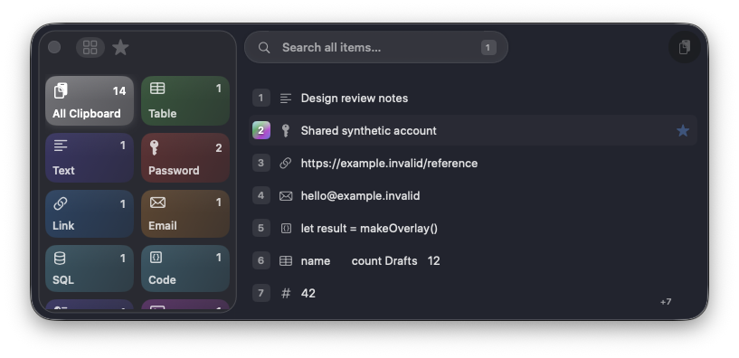
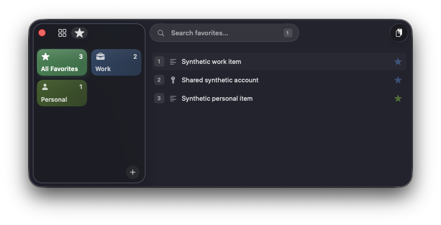

Recover an earlier copy
Search recent text, links, email addresses, tables, code, files and images instead of returning to the original document.
A clipboard with a memory
Copi keeps a private, searchable history of text, links, images and more. Open it anywhere on your Mac, find the right item, and continue working.
Requires macOS 26.4 or later · Signed, not notarized · Local encrypted storage

Why Copi?
Copy normally while browsing or writing. Copi quietly builds a history you can search when the latest clipboard is no longer the item you need.
Search recent text, links, email addresses, tables, code, files and images instead of returning to the original document.
Open Copi with your configured shortcut, then click the item you want. Keyboard controls and numbered rows are optional ways to move faster.
Save replies, addresses, reference links and snippets as Favorites, then arrange them in categories that make sense to you.
Using Copi
Copi watches for genuine changes to the macOS clipboard. When you copy text, an image or another supported item, it adds an encrypted entry to History. Opening Copi does not replace the clipboard until you actually choose something.
If Automatic Paste Events permission is unavailable, Copi explains that nothing was copied or pasted instead of silently changing the pasteboard.
This is an accelerator, not a required workflow. You can always point and click the full row instead.
Start typing after opening Copi. In All Clipboard, Search looks through clipboard history and every Favorite’s optional name and content. Search becomes scoped when you choose a Favorite category or Content Type.
Searches recent clipboard history plus all Favorites. The empty, untyped list remains the compact suggestion view.
Searches only that Favorite category or Content Type. Hiding the sidebar returns to All Clipboard but keeps and reruns your query.
The overlay
Copi opens near your pointer. It is designed for quick choices, but every main action also works with the mouse.
Copi recognizes Table, JSON, XML, Markdown, SQL, Code, Link, Email, File Path, Number, Image and Text. A manual Password type is also available. Selecting a type shows matching clipboard entries in their normal recent-first order.
Favorites
History follows what you copy. Favorites are snippets you deliberately keep: an address, a standard reply, a booking reference, a link or anything else you reuse.

D, F and T are reserved. Category and Content Type letters share one collision-checked shortcut set.
“Masked” is useful for shoulder-surfing. “Password” is a stricter Content Type with permanent masking and safer clipboard restoration behavior.
Preview & quick actions
Preview is read-only and opens only when requested. Quick Actions recognize Links, Email addresses and File Paths.
A masked value reveals only after a deliberate click inside Preview. Preview never becomes an editor.
Context-aware suggestions
The algorithm asks one practical question: Where has this item previously been used? It treats where you copied something and where you later pasted it as different facts.
Every past use goes into exactly one scoring tier. An exact event is not counted again as surface, application and global evidence.
A dispatched paste is the strongest outcome Copi can verify. macOS does not tell Copi whether the destination actually consumed the data, so the wording is deliberately “paste dispatched.” Within the 180-day learning window, an item qualifies through any one of these routes:
| Matching history | Promotion threshold | Example |
|---|---|---|
| Exact destination | 2 dispatched pastes | The same Link used twice in a browser Address bar. |
| Same surface | 3 cumulative dispatched pastes | A standard reply used across fields in an email Compose window. |
| Same application | 5 cumulative dispatched pastes | A document snippet repeatedly used somewhere in the same writing app. |
Merely seeing an item is not evidence. Selecting without a dispatched paste counts at one quarter strength for scoring, but cannot satisfy promotion. Copy-source observations and global use also cannot promote an item.
Evidence has a 45-day half-life and disappears from ranking after 180 days. Copi uses logarithmic diminishing returns, so the tenth repeat helps less than the first few. Confidence also reduces exact or surface evidence when the destination had to be inferred less reliably.
Each total above is already adjusted for event outcome, age and confidence. A selection without dispatch has a 0.25 outcome multiplier; a dispatched paste has 1.00.
Copi can still be useful before it has enough personal history. A browser Address bar prefers Links, recipient or invitee fields prefer Email addresses, and secure fields prefer Passwords. Up to three of these semantic matches can enter the initial list. Favorites receive a small bonus, but unrelated Favorites do not crowd the default All list.
A destination can include the application, a stable surface such as Browser page or Compose, and a focused area such as Address bar, Recipient or Subject. Standard browser content may keep only the hostname. Full URLs, paths, queries, message bodies, recipient text, document names and arbitrary window titles are not learning keys. Private or uncertain browser modes suppress the hostname.
Configuration
Open the Copi menu and choose Show Copi Settings. These are the everyday options worth knowing.
Choose how many recent clipboard entries Copi remembers.
Control how much of the desktop shows through the overlay.
Strip formatting by default. Hold Shift while choosing an item to temporarily reverse your setting.
Show or hide a short version of the current clipboard beside Copi’s menu-bar icon.
Follow macOS or give every Copi window a fixed appearance.
Have Copi start automatically after you sign in to the Mac.
Choose the global key combination that opens the overlay. The fresh-install default is ⌘J.
Keep the overlay visible while moving between applications. ⇧⌘P is an optional keyboard equivalent.
Copi normally preserves the available formatting. Hold Shift while choosing an item when this particular paste should be plain text.
Copi normally strips formatting. Hold Shift while choosing an item when this particular paste should keep its original formatting.
Enable Debug Logging only when diagnosing behavior. After a 0.5-second result hover, the separate diagnostic card can explain captured formats, effective type, destination classification, ranking counts, score components and storage state. Settings can reveal or clear the rotating JSONL logs. Logs exclude clipboard/Favorite payload text, password text, passphrases and encryption keys.
Optional keyboard controls
Use Copi’s icons, cards, rows and menus with the pointer if that feels natural. The controls below are preferences and accelerators, not the only way to understand or use the app. The opening shortcut itself is configurable; ⌘J is merely the default.
Privacy
History, Favorites and payload files are encrypted before they are stored. The key derived from your launch passphrase remains in memory while Copi runs.
Items marked as Password remain hidden in results and can be revealed deliberately in the read-only Preview.
Suggestion records use private identifiers and semantic destination context rather than clipboard or Favorite content.
Exported settings and Favorites use their own passphrase. Clipboard history is intentionally left out of the backup.
Copi derives an encryption key after you enter the passphrase. That key remains in memory and is not stored in Keychain. Copi keeps only a random salt, bounded derivation parameters and an encrypted verifier.
If the passphrase is forgotten, Copi cannot decrypt the local store. Settings offers a confirmed secure reset rather than silently overwriting it.
The destination can receive a password only after it briefly exists on the macOS pasteboard. Copi minimizes that interval and normally restores the previous clipboard afterward.
If the previous clipboard is the same password, Copi clears it instead. A Password copied from Settings expires after 30 seconds if nothing else replaces it.
A confidently standard browser page may retain only its hostname—not the path, query or fragment. Address-bar learning excludes the hostname. Private, Incognito and uncertain browser modes suppress it completely.
Accessibility Context helps classify the destination. Automatic Paste Events allows Copi to post one ⌘V after verifying that destination is still active. Copi does not monitor or record typing.
Getting started
Download the latest archive, unzip it and move Copi to Applications.
Copi is signed but not notarized. On the first launch, Control-click or right-click Copi, choose Open, then confirm. Later launches work normally.
Copi uses separate permissions to understand the current paste destination and to send one paste command after checking that the destination is still active. It does not monitor or record your typing. After enabling Copi in System Settings → Privacy & Security → Accessibility, quit and reopen it.
The encrypted local store cannot be recovered without it. Copi can securely reset the local store, but that starts history and Favorites again. An exported backup has its own passphrase.